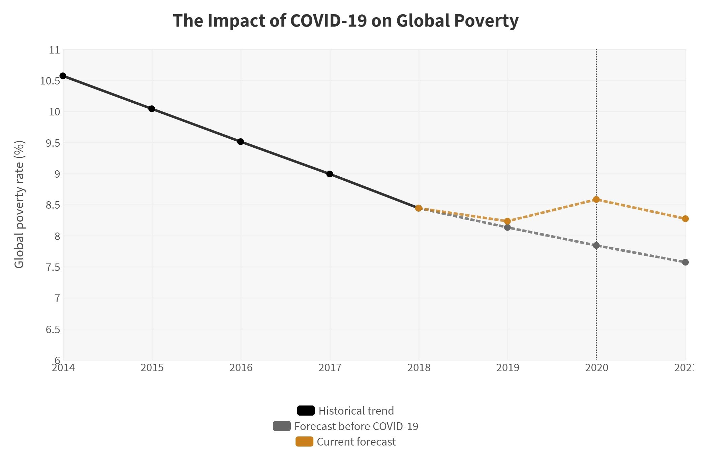

COVID-19 is the ongoing pandemic, with over 6 million total cases worldwide as of May 2020. This pandemic has intruded on everyone’s lives, from quarantines, travel restrictions, and curfews in some countries. Restaurants have closed, business has decreased, and not many people go outside for their own protection. This has caused a large economic recession around the world. Evidence has revealed that COVID-19 will most likely push 40 - 60 million people into extreme poverty in 2020. This means that these people would live on less than 1.90$, and additional evidence has revealed that COVID-19 is likely to cause the first increase in global poverty since 1998. For vulnerable families, income loss due to COVID-19 can translate to more spikes in poverty, missed meals for children, and reduced access to healthcare. In a more negative scenario, global poverty in 2020 could be close to the level in 2017, meaning that the world’s progress in eliminating extreme poverty could be set back by three years.
Data and Graph sourced from World Bank Blogs, World Economic Forum, and Center for Global Development